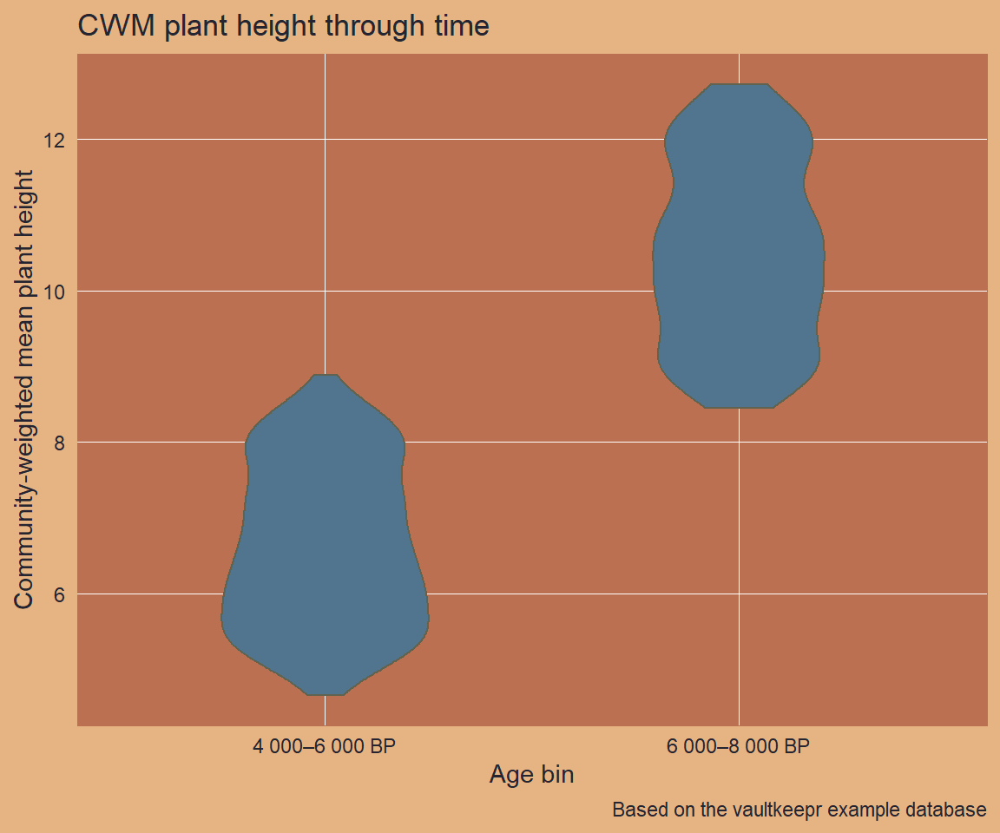

path_to_db <- source("helper_make_example_db.R")$valueIntroduction
Paleoecological records such as fossil pollen archives capture how plant communities shifted in response to past climate change. When linked to trait databases, the same records can reveal changes in functional composition through time — for instance, whether communities became taller or more acquisitive during warmer periods.
Trait data in VegVault follow the Diaz et al. (2016) framework and are sourced from TRY and BIEN. Six trait domains are included: Stem specific density, Leaf nitrogen content per unit mass, Diaspore mass, Plant heigh, Leaf Area, and Leaf mass per area. Within each domain, individual trait names preserve the original name from the primary source (e.g. "whole plant height" from BIEN, "Plant height vegetative" from TRY).
In this article we combine fossil pollen archives with plant height data from South America, covering the 4 000–8 000 cal yr BP window, and visualise how the community-weighted mean height changes across time.
We use a small example database (built automatically below) that mirrors the structure and naming conventions of a real VegVault file. Swap the path for your own VegVault download to work with real data.
Step 1 — Open the vault
open_vault() creates a connection to the VegVault SQLite file and returns a vault_pipe object. This object is the plan — it carries both the live database connection and the accumulating lazy query through every subsequent step. No data is transferred at this stage.
library(vaultkeepr)
plan <-
open_vault(path = path_to_db)Step 2 — Add dataset metadata
get_datasets() extends the plan with the central Datasets table. Trait datasets (dataset_type == "traits") are global in scope — they are not filtered by geography in the next step because traits apply universally to a taxon regardless of where the pollen sample was collected. Only the fossil_pollen_archive datasets will be geographically filtered.
plan <-
plan |>
get_datasets()Step 3 — Filter by dataset type
We need two dataset types:
-
fossil_pollen_archive— sediment-core pollen records from Neotoma-FOSSILPOL, giving us taxon occurrences through time. -
traits— functional trait measurements from TRY/BIEN.
get_traits() (Step 8) links the two by matching genus-level taxon IDs. Including both types in the query now ensures those IDs are available when needed.
plan <-
plan |>
select_dataset_by_type(
sel_dataset_type = c(
"fossil_pollen_archive",
"traits"
)
)Step 4 — Filter by geography
We focus on western Amazonia (longitude −59 to −61 °W, latitude −14 to −16 °S), a biodiverse tropical region with a well-sampled Holocene pollen record.
Note:
traitsdatasets are intentionally excluded from geographic filtering: trait values are assigned to taxa globally, not to the location where the TRY/BIEN measurement was taken. You will see a message confirming this behaviour.
plan <-
plan |>
select_dataset_by_geo(
long_lim = c(-61, -59),
lat_lim = c(-16, -14)
)
#> The data does not contain the all dataset types specified in `vec_dataset_type`.
#> Changing `vec_dataset_type` to the dataset types present in the data as: fossil_pollen_archive
#> The selected dataset type will not be filtered: traitsStep 5 — Add sample information
get_samples() extends the plan with sample-level metadata: age (in cal yr BP for fossil records, 0 for modern), sample name, and plot size. Each sample belongs to exactly one dataset.
plan <-
plan |>
get_samples()Step 6 — Restrict to the mid-Holocene window
We add an age filter to the plan, retaining samples from 4,000–8,000 cal yr BP — a warm and humid interval in tropical South America characterised by high plant-community turnover. The age filter applies only to fossil_pollen_archive records; traits samples are not age-filtered (TRY/BIEN trait measurements are contemporary observations assigned to a taxon, not time-stamped).
plan <-
plan |>
select_samples_by_age(age_lim = c(4000, 8000))
#> The data does not contain the all dataset types specified in `vec_dataset_type`.
#> Changing `vec_dataset_type` to the dataset types present in the data as: fossil_pollen_archive
#> The selected dataset type will not be filtered: traitsStep 7 — Add taxa (harmonised to genus)
Trait databases in VegVault (sourced from TRY and BIEN) rarely have coverage below genus level. Setting classify_to = "genus" uses the pre-computed TaxonClassification table (built with the {taxospace} package using the GBIF Taxonomy Backbone) to roll all species-level pollen identifications up to genus, enabling reliable matching with the trait data in the next step.
Warning
classify_totriggers a computationally expensive join against theTaxonClassificationtable. On a large query this can be very slow. The harmonisation is also produced by an automated process: misclassifications can occur, particularly for ambiguous names or taxa absent from the GBIF backbone. Verify results for any taxa that are critical to your analysis.
plan <-
plan |>
get_taxa(classify_to = "genus")Step 8 — Attach trait data
get_traits() extends the plan with the TraitsValue, Traits, and TraitsDomain tables linked to the taxa already in the pipeline. Harmonising to classify_to = "genus" here as well ensures that pollen taxa and trait observations are matched at the same taxonomic level. Multiple trait observations for the same genus and trait domain may be present; these are aggregated in the CWM calculation below.
Warning
classify_totriggers a computationally expensive join against theTaxonClassificationtable. On a large query this can be very slow. In addition, the taxonomic harmonisation is produced by an automated process: misclassifications can occur, especially for ambiguous names or taxa not covered by the GBIF backbone. Always verify results for taxa that are critical to your analysis.
plan <-
plan |>
get_traits(classify_to = "genus")
plan
#> $data
#> # Source: SQL [?? x 19]
#> # Database: sqlite 3.47.1 [D:\Temp\Rtmp6P4LM2\vaultkeepr_example.sqlite]
#> dataset_id dataset_name data_source_id dataset_type_id data_source_type_id
#> <int> <chr> <int> <int> <int>
#> 1 259 dataset_259 1 2 3
#> 2 259 dataset_259 1 2 3
#> 3 259 dataset_259 1 2 3
#> 4 259 dataset_259 1 2 3
#> 5 259 dataset_259 1 2 3
#> 6 259 dataset_259 1 2 3
#> 7 259 dataset_259 1 2 3
#> 8 259 dataset_259 1 2 3
#> 9 259 dataset_259 1 2 3
#> 10 259 dataset_259 1 2 3
#> # ℹ more rows
#> # ℹ 14 more variables: coord_long <dbl>, coord_lat <dbl>,
#> # sampling_method_id <int>, dataset_type <chr>, sample_id <int>,
#> # sample_name <chr>, sample_details <chr>, age <dbl>, sample_size_id <int>,
#> # value <dbl>, taxon_id <int>, trait_id <int>, trait_value <dbl>,
#> # taxon_id_trait <int>
#>
#> $db_con
#> <SQLiteConnection>
#> Path: D:\Temp\Rtmp6P4LM2\vaultkeepr_example.sqlite
#> Extensions: TRUE
#>
#> attr(,"class")
#> [1] "list" "vault_pipe"Step 9 — Filter to the plant height trait domain
VegVault groups traits into six domains following Diaz et al. (2016). We keep only the plant height domain. The domain name in VegVault is "Plant heigh" (note the missing terminal “t”) — this is the exact string stored in the TraitsDomain table of the real VegVault database, preserved here to ensure code written against the example database transfers directly to real data. Within this domain, individual trait names include "whole plant height" (BIEN) and "Plant height vegetative" (TRY).
plan <-
plan |>
select_traits_by_domain_name(sel_domain = "Plant heigh")Step 10 — Execute the plan
The plan is now fully specified. extract_data() executes the complete lazy query and returns a nested tibble — one row per dataset — with fossil occurrence data in data_community and data_samples, and trait observations in data_traits. See Exploring extract_data() for a detailed walkthrough of both output modes.
data_sa_traits <-
plan |>
extract_data(verbose = FALSE)
dplyr::glimpse(data_sa_traits)
#> Rows: 176
#> Columns: 10
#> $ dataset_name <chr> "dataset_259", "dataset_260", "dataset_261", "…
#> $ data_source_desc <chr> "EVA (European Vegetation Archive)", "EVA (Eur…
#> $ dataset_type <chr> "fossil_pollen_archive", "fossil_pollen_archiv…
#> $ dataset_source_type <chr> "Neotoma-FOSSILPOL", "Neotoma-FOSSILPOL", "Neo…
#> $ coord_long <dbl> -60, -60, -60, -60, -60, -60, -60, -60, -60, -…
#> $ coord_lat <dbl> -15, -15, -15, -15, -15, -15, -15, -15, -15, -…
#> $ sampling_method_details <chr> "Standardised vegetation plot survey (1–1000 m…
#> $ data_samples <list> [<tbl_df[42 x 5]>], [<tbl_df[42 x 5]>], [<tbl…
#> $ data_community <list> [<tbl_df[42 x 9]>], [<tbl_df[42 x 8]>], [<tbl…
#> $ data_traits <list> <NULL>, <NULL>, <NULL>, <NULL>, <NULL>, <NULL…Full pipeline
data_sa_traits <-
open_vault(path = path_to_db) |>
get_datasets() |>
select_dataset_by_type(
sel_dataset_type = c("fossil_pollen_archive", "traits")
) |>
select_dataset_by_geo(
long_lim = c(-61, -59),
lat_lim = c(-16, -14)
) |>
get_samples() |>
select_samples_by_age(age_lim = c(4000, 8000)) |>
get_taxa(classify_to = "genus") |>
get_traits(classify_to = "genus") |>
select_traits_by_domain_name(sel_domain = "Plant heigh") |>
extract_data()Visualising the data
data_sa_traits holds one row per dataset. Fossil pollen datasets carry pollen abundances in data_community (wide format: one column per genus) and sample ages in data_samples. Trait datasets carry trait observations in data_traits (wide format: one row per trait × sample, one column per genus). We unnest these to compute a community-weighted mean (CWM) plant height for every fossil pollen sample by (1) extracting the mean trait value per genus from data_traits, and (2) computing the abundance-weighted mean over all genera present in each fossil sample.
Code
# Mean trait value per genus from the nested trait datasets
data_genus_trait <-
data_sa_traits |>
dplyr::filter(dataset_type == "traits") |>
dplyr::select(dataset_name, data_traits) |>
tidyr::unnest(cols = data_traits) |>
tidyr::pivot_longer(
cols = -c(dataset_name, sample_name, trait_domain_name, trait_name),
names_to = "taxon_name",
values_to = "trait_value"
) |>
tidyr::drop_na(trait_value) |>
dplyr::group_by(taxon_name) |>
dplyr::summarise(
mean_trait_value = mean(trait_value, na.rm = TRUE),
.groups = "drop"
)
# Sample ages from fossil pollen datasets
data_ages <-
data_sa_traits |>
dplyr::filter(dataset_type == "fossil_pollen_archive") |>
dplyr::select(dataset_name, data_samples) |>
tidyr::unnest(cols = data_samples) |>
dplyr::select(dataset_name, sample_name, age)
# Fossil pollen occurrences (long format) with ages
data_fossil_occ <-
data_sa_traits |>
dplyr::filter(dataset_type == "fossil_pollen_archive") |>
dplyr::select(dataset_name, data_community) |>
tidyr::unnest(cols = data_community) |>
tidyr::pivot_longer(
cols = -c(dataset_name, sample_name),
names_to = "taxon_name",
values_to = "abund"
) |>
dplyr::filter(!is.na(abund), abund > 0) |>
dplyr::left_join(
data_ages,
by = dplyr::join_by(dataset_name, sample_name)
)
# CWM per fossil sample: sum(abundance * trait) / sum(abundance)
data_cwm <-
data_fossil_occ |>
dplyr::left_join(
data_genus_trait,
by = dplyr::join_by(taxon_name)
) |>
tidyr::drop_na(mean_trait_value) |>
dplyr::group_by(dataset_name, sample_name, age) |>
dplyr::summarise(
cwm = sum(abund * mean_trait_value) / sum(abund),
.groups = "drop"
)
data_for_plot <-
data_cwm |>
dplyr::mutate(
age_bin = cut(
age,
breaks = c(4000, 6000, 8000),
labels = c("4 000–6 000 BP", "6 000–8 000 BP"),
include.lowest = TRUE
)
) |>
tidyr::drop_na(age_bin)
ggplot2::ggplot(
data = data_for_plot,
mapping = ggplot2::aes(x = age_bin, y = cwm)
) +
ggplot2::geom_violin(
fill = col_blue_light,
colour = col_green_dark,
width = 0.5
) +
ggplot2::labs(
title = "CWM plant height through time",
x = "Age bin",
y = "Community-weighted mean plant height",
caption = "Based on the vaultkeepr example database"
)
Next steps
- Add more trait domains using additional
select_traits_by_domain_name()calls (or remove the filter to retain all traits) - Restrict to a specific genus with
select_taxa_by_name() - Download the real VegVault database from the Database Access page and replace
path_to_dbto run an identical analysis on real palaeoecological data - Retrieve data citations with
get_references() - Explore both output modes of
extract_data()— see the Exploring extract_data() article - Compare with climate data — see the vegetation climate article
- A comparable real-data example — CWM plant height for South and Central Latin America between 6–12 ka — is shown in the VegVault Usage Examples